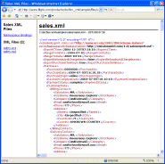
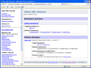
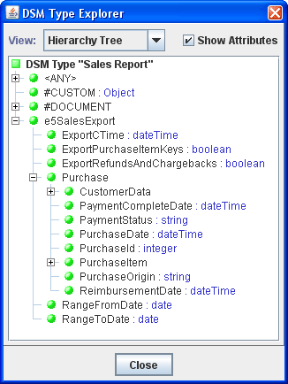
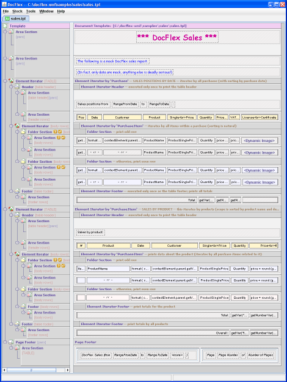
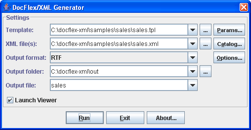
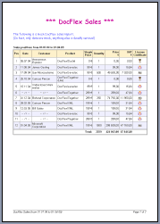
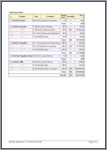
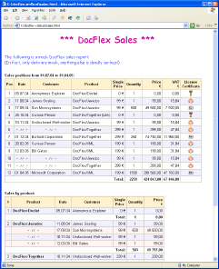

The following sample demonstrates how DocFlex/XML can be used for a typical reporting task: generating a financial/bookkeeping report with some rows of figures and total sums.
The purpose of this report is quite real.
FILIGRIS WORKS uses Element5 e-commerce service (called share*it!) to outsource processing of its sales.
To have the detailed information about the sales processed during a particular period of time,
Element5 provides its customers with the raw data which can be downloaded from their web-site
at any moment in the form of an XML file called 'sales.xml'.
In addition to that XML with the raw data, Element5 provides the XML Schema file 'sales.xsd'
(which is also XML). This file contains the data type information on which sales.xml
is based.
Click on the picture to see the full HTML listings of both XML files:

Having received such XMLs, one may want to generate from them something looking more convenient to read as well as, probably, to have some total figures in addition. Here's how that task can be implemented using DocFlex/XML.
The structure of the DSM (Data Source Model)
is entirely defined by the XML Schema specified in sales.xsd file.
Click on the picture to see the documentation generated for this XML Schema:

Notice: |
The XML Type definition consists of only two lines:
sales.name = Sales sales.xsd.files = %DFH%/samples/sales/sales.xsd
The %DFH% macro
representing the DocFlex/XML home directory is used to avoid specifying the absolute pathname.
Here is how the DSM Type
(Data Source Model Type) constructed by this definition looks in the Template Designer's browser
(the XML data type information is loaded from the sales.xsd schema file):
Click on this screenshot to see a more detailed treeview shown within the Expression Assistant Dialog.
The following screenshot shows the template based on the specified XML Type and designed for the given reporting task (click on the picture to see in full size):

The generator dialog can be invoked directly from the Template Designer and specified as shown on the screenshot:

As you click on the “Run” button in the dialog above, the following RTF document will be generated (click on the picture to see the real size page preview):
 
The icons visible in the “License Certificate” column (on the first page) were also taken
from the sales.xml data source file. They are the values of
<PurchaseItemKey><Data></Data></PurchaseItemKey>
elements which originally were supposed to hold any binary data of the license keys to the sold software.
As this is a mock sales report, those elements have been filled with the Base64-encoded
icons and the sales.tpl template was programmed
to display the values of those elements as images. This demonstrates how DocFlex/XML
can handle images imbedded in any schema-based XML files in the form of element values.
When you run the generator again with the HTML output format selected, the following document will be generated (click on the screenshot to see the live HTML):
